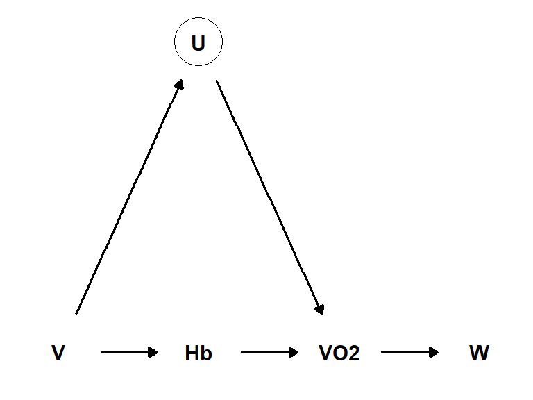
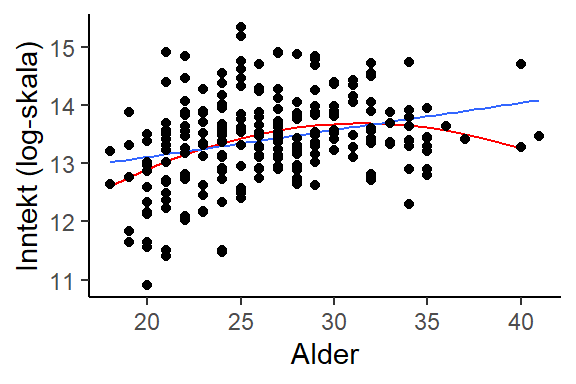

6 Kausal analyse i Jamovi
üìπ Forelesning: Simulert kausal inferens 1.
üìπ Forelesning: Simulert kausal inferens 2.
üìπ Forelesning: Simulert kausal inferens 3.
Du finner datasettet fra simuleringene her. Last inn datasettet i Jamovi og utforsk sammenhengen mellom variablene.
6.1 Gjennomsnittlig behandlingseffekt
I et eksperiment ønsker vi å undersøke effekten av en behandling (B) på en avhengig variabel (Y). Vi har mulighet til å rekruttere 100 deltakere til eksperimentet, og vi tilordner deltakerne tilfeldig til en av to grupper: en behandlingsgruppe (B=1) og en kontrollgruppe (B=0). Vi måler utfallet Y for hver deltaker i forkant (\(Y_1\)) og etterkant (\(Y_2\)) av intervensjonen. Med forsøket ønsker vi å bestemme den gjennomsnittlige behandlingseffekten (i engelsk litteratur også kalt ATE, average treatment effect). Vi kan definere behandlingseffekten som forskjellen i gjennomsnittlig utfall mellom behandling- og kontrollgruppen.
Vi kan formulerer effekten som vi ønsker å estimere som
\[(Y_{1, B=1} - Y_{0, B=1}) - (Y_{1,B=0}-Y_{0,B=0})\] Og vi leser det som, differensen i utfall mellom tid 1 og 0 i behandlingsgruppen (\(B=1\)) minus differensen i utfall mellom tid 1 og 0 i kontrollgruppen (\(B=0\)). Vi har nå definert den kvantitet vi ønsker å estimere. Dette kalles i den engelske litteraturen for estimand, et begrep som brukes for å beskrive resultatet av en analyse av antagelser og sprørsmålet som vi ønsker å besvare (Pearl 2019). Hvilke er antagelsene? Vi har veldig få antagelser, ettersom forsøket er et randomisert forsøk har vi ingen veier inn i behandlingsvariabelen (B) og den er bare direkte sammenkoblet med utfallet (Y).
Pearl, Judea. 2019. “The Seven Tools of Causal Inference, with Reflections on Machine Learning.” Communications of the ACM 62 (3): 54–60. https://doi.org/10.1145/3241036.
Neste steg er å gjøre estimeringen. Vi kan gjøre dette ved å lage en variabel som beskriver forandring y_diff = Y1 - Y0 og så lage en gruppesammenligning på den nye variabelen.
Oppgave: Beregne gjennomsnittlig behandlingseffekt?
Du finner datasettet her. Last inn datasettet i Jamovi og beregn den gjennomsnittlige behandlingseffekten. Bruk en regresjonsmodell for å estimere effekten av behandling (B)
Svar: Beregne gjennomsnittlig behandlingseffekt?
Vi starter med å lage den nye variabelen. Vi har allerede definert den over som y_diff = Y1 - Y0. Vi kan gjøre dette i Jamovi ved å velge Add og Computed variable. Vi kan så lage en regresjonsmodell med y_diff som avhengig variabel og B som uavhengig variabel. Vi kan så se på koeffisienten for B for å se effekten av behandling, dette er den gjennomsnittlige behandlingseffekten.
6.2 Dårlige kontrollvariabler
I et eksperiment undersøker vi effekten av varmetrening på sykkelprestasjon. Spesifikt er vi er interesserte i å finne ut om varmetrening påvirker prestasjon på en sykkeltest hvor watt er utfallsvariabelen. Vi har rekruttert 26 deltakere til eksperimentet og tilordnet dem tilfeldig til en varmetreningsgruppe (G=1) og en kontrollgruppe (G=0). Vi har målt prestasjonen på sykkeltesten før og etter intervensjonen. Vi har også målt hemoglobinmasse (hb) og VO2maks til deltakerne før og etter intervensjonen.
Datasettet sykkeltest.csv inneholder variablene group (0=kontroll, 1=varmetrening), time (pre, post), hb (hemoglobinmasse), VO2max (maksimalt oksygenopptak) og Watt (sykkelprestasjon).
Oppgave: Beregne gjennomsnittlig behandlingseffekt?
Du finner datasettet her. Last inn datasettet i Jamovi og beregn den gjennomsnittlige behandlingseffekten. Bruk en regresjonsmodell for å estimere effekten av varmetrening på sykkelprestasjon (Watt). Da vi har målt VO2maks og hemoglobinmasse før og etter intervensjonen kan vi inkludere disse variablene som kontrollvariabler i modellen. Men hva skjer med estimatet for varmetrening når vi inkluderer disse variablene i modellen?
Svar: Beregne gjennomsnittlig behandlingseffekt?
Det finnes flere måter å estimere forskjell mellom gruppene i forandring i sykkelprestasjon. En måte er å lage en ny variabel som beskriver forandring watt_diff = watt_post - watt_pre og så lage en gruppesammenligning på den nye variabelen. I Jamovi må vi strukturere dataene slik at vi har en rad per deltaker og en kolonne per variabel. Jamovi har ikke funksjoner som lett lar deg transponere datasett. Her må vi gjøre arbeidet manuellt. Vi kan så lage en regresjonsmodell med watt_diff som avhengig variabel og group som uavhengig variabel. Vi kan så se på koeffisienten for group for å se effekten av varmetrening.
Effekten er estimert til 12.52 watt, med et standardfeil på 6.45. Effekten tilsvarer altså nesten 2 standardfeil.
La oss se på en DAG som beskriver våre data (Figur 6.2).

DAGen viser at varmetrening (V) påvirker sykkelprestasjon (W) gjennom hemoglobinmasse (Hb), VO2maks (VO2) og en (eller flere) ikke målte variabler (U).
Når vi er interesserte i den totale effekten av varmetrening på sykkelprestasjon, er det viktig å ikke inkludere variabler som påvirkes av behandlingen (varmetrening, treatment). Hvis vi gjør det oppstår “post-treatment bias” hvor vi tar vekk effekten av behandlingen. For å illustrerer dette, lag en to nye modeller som inkluderer inkludere forandring i hemoglobinmasse og VO2maks (eks. hb_diff = hb_post - hb_pre) i modellen.
Når vi inkluderer hemoglobinmasse i modellen, reduseres effekten av varmetrening til 6.05 watt, med et tilhørende standardfeil på 16.19. Effekten av varmetrening har tilsynelatende forsvunnit helt, den tilsvarer mindre en helften av et standardfeil. Det å inkluderer en post-treatment variabel i modellen reduserer effekten og gjør den mer usikker, noe vi ser gjennom et større standardfeil.
6.3 En kurvilineær kontrollvariabel
I Thrane (2019) analyseres dataene fra datasettet fotball_1_2_3.csv, her konstateres at alder bør inkluderes i en modell som brukes for å estimere effekten av prestasjon på inntekt. I figuren under (Figur 6.3) illustreres to former for sammenheng mellom alder og inntekt. Den blå linjen viser en lineær sammenheng, mens den røde linjen viser en kurvlineær sammenheng. Den kurvlineære sammenhengen er estimert ved hjelp av en polynomisk regresjonsmodell.
Thrane, Christer. 2019. “Performance and Actual Pay in Norwegian Soccer.” Journal of Sports Economics 20 (8): 1051–65. https://doi.org/10.1177/1527002519851146.
I Jamovi kan vi estimere en polynomisk regresjonsmodell ved å lage en ny variabel, alder^2. Vi kan så inkludere denne variabelen i en regresjonsmodell sammen med alder.

Oppgave: Lag en polynomisk regresjonsmodell?
Bruk datasettet fotball_1_2_3.csv og lag en polynomisk regresjonsmodell for å estimere effekten av alder på inntekt.
- Legg til en ny variabel,
alder2i datasettet beregnet somalder^2. Lag också en transformert variabelloginntektsom er logaritmen til inntekt. TransformeringenLN($source)vil gjøre dette for deg. - Lag en polynomisk regresjonsmodell med
loginntektsom avhengig variabel ogalderogalder2som uavhengige variabler. - Les av estimaten, disse bør være
alder = 0.38ogalder2 = -0.01.
6.3.1 Et alternativ
I Jamovi kan vi bruke modulen GAMLj for å lage en polynomisk regresjonsmodell. Dette gjør vi ved å først velge Analyses og GAMLj. Vi kan så legge til variablene loginntekt som avhengig variabel og alder som uavhengig variabel (covariates). Under Model kan vi så legge inn variabelen alder i kvadrat. Under Plot kan vi legge alder på horisontal aksel for å se hvordan sammenhengen mellom variablene ser ut.